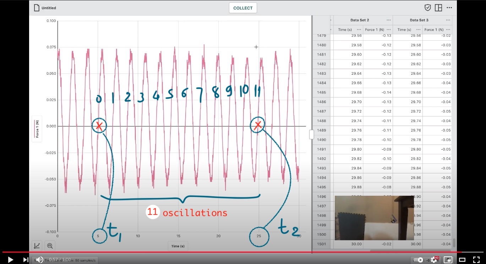

Lab 1¶
Here you can find all stuffs related to Lab 1
Overview¶
For complete guide on the experiment, please read the lab manual on Canvas here.
In lab 1, you will only do analysis with pre-recorded videos. There are 7 videos in part 1 and 1 in part 2. So, remember 8 in total.
You have to extract information from the videos (i.e. period of motion) and conduct video analysis in LoggerPro(Part 1_4).
Part 1: Simple Harmonic Motion¶
Before we start, here is a table of some information needed to calculations.
\(\pmb{M_{weak}}\) |
\(0.011\pm{0.001} kg\) |
|---|---|
\(\pmb{M_{strong}}\) |
\(0.174\pm{0.010} kg\) |
\(\pmb{\delta{t_{1}}\:or\:\delta{t_{2}}}\) |
\(\pm{0.02} s\) |
Note
Force probe is zeroed at the point of equilibrium for each case.
Section 1.1 - 1.3¶
Videos 1-6 are divided into 2 categories (weak and strong spring) with 3 different mass values in each -> Keep track on which spring is being used.
You only need to look at the Youtube videos and extract the motion period.
Then, calculate \(f = \frac{1}{T}\) and \(\omega = 2*\pi*f\).
Find period:
You need to use equation (2). \(T = \frac{\Delta{t}}{n}\), where n: #oscillations.
Choose a point on the graph that align with one of the axis ticks. Then choose another point at later time that the object returns to that exact value (i.e. y-value) and also aligns with a tick.
Record the different in time.
Count the number of oscillations between them. Basically, count the number of ticks including themselves - 1.
Here is an example:

Caution
Here my index goes from 0. So there is a total of 12 ticks.
Section 1.4¶
You have your video on Canvas. Download and insert into Logger Pro.
Set the scale to be from horizontal bar down to the table
Plot position vs time graph of the motion by specifying positions of the object (hanger + mass) in each frame.
When you are done, sketch the shape of graph into your report sheet.
Here is a demo for you to follow:

Tip
Hide the previous points to avoid cluster. And set the frame per second to 2.
Part 2: Damped Simple Harmonic Motion¶
Part 2 is similar to part 1.1-1.3. All you have to do is to extract the period to calculate angular frequency \(\omega\).
Then, we want to compare it to one of our trial in part 1.1 - 1.3: Hint: Look at the combined mass.
\(Mass_{board+hanger}\) |
\(0.060\pm{0.010}\) |
|---|
Below is the picture of the graph that you want to take the period from.

Tip
Why can we do that? Basically, the system energy is lost (max y-value is smaller with time). However, your frequency is not affected. Thus, angular frequency \(\omega\) is not.
Data Collection and Analysis¶
Record your data in the table and derive \(\omega\) of different cases for part 1.1-1.3.
Sketch the shape of the graph for part 1.4.
Extract \(\omega_{damped}\) and compare to part 1.1-1.3.
Caution
Please use the report template to write. If not, your report won’t be marked (not my decision tho - lab manager said so).
Discussion Questions¶
Question 1: It basically asks why we always start from a simple model (with so many assumptions) before paying attention to other potential errors (i.e.system error, human error)?
Question 2: Basically, energy transformation. Remember we are talking about undamped spring.
Tip
We study only 2 main types of energy in this motion. What are they?